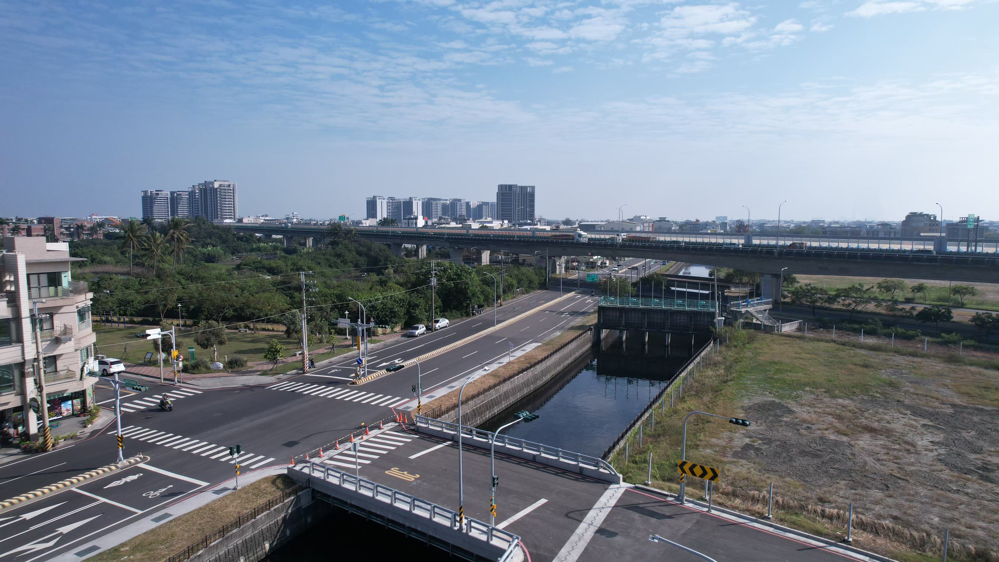

道路與公共基礎設施
整合道路、排水及公共設施施工，從前期施工計畫、交通維持到現場工務管理，兼顧工區作業效率與民眾通行安全。
- 道路與人行空間
- 公共管線與排水系統
- 區段徵收公共設施
整合土木工程技術與現場工務管理，從施工計畫到現場執行，落實道路、橋梁、水利與公共基礎設施建設。點選代表工程，可查閱完整介紹、工程影像及相關紀錄。
整合道路、排水及公共設施施工，從前期施工計畫、交通維持到現場工務管理，兼顧工區作業效率與民眾通行安全。

承辦橋梁與土木結構施工，重視基礎、結構組裝及各階段作業安全。以斜張橋式渡槽串聯灌溉系統，呈現結構工程與水利設施的整合。

投入排水、滯洪與抽水設施建設，整合土木結構及現場施工管理，掌握汛期前施工安排，提升區域防洪與排水效能。